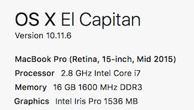
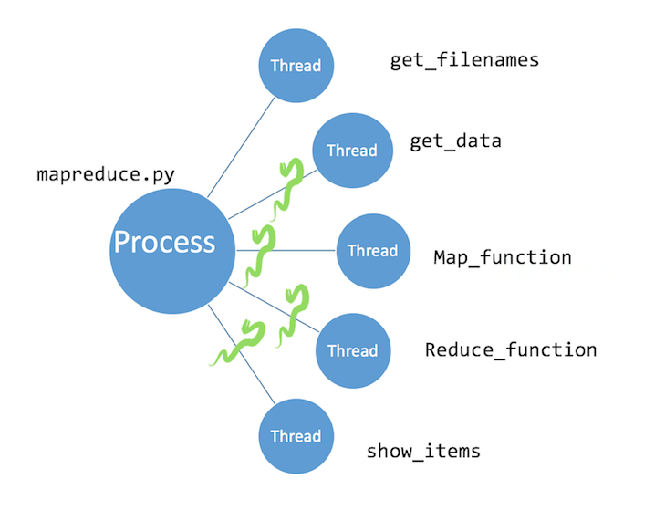

Replace Hadoop with Your LaptopThe Case for Multiprocessing
Vicki Boykis @vboykis
About me
Data Science + Engineering @ CapTechGitHub: @veekaybee
Website: vickiboykis.com

Agenda

- Your computer is good enough
- You don't always have big data
- Multiprocessing
- Distributed system overhead
"There is a time for every data environment"
-The Byrds, Probably
To everything (turn turn)
There is a season (turn turn)
And a time to every purpose
A time to laugh
A time to cry
A time for distributed systems
A time for local processing
A time for healing
My computing environment

You don't always have big data

And, how frequently are you processing these sizes of data?
How much data can your laptop process?
- Databricks Tungsten: "Aggregation and joins on one billion records on one machine in less than 1 second."
- Command Line: 1.75GB containing around 2 million chess games. "This
find | xargs mawk | mawkpipeline gets us down to a runtime of about 12 seconds, or about 270MB/sec, which is around 235 times faster than the Hadoop implementation."
Les MapReduces – Word count exercise
 Les Miserables - 655k words / 3.2 MB textfile
Les Miserables - 655k words / 3.2 MB textfile
Checking out the file
vboykis$ head -n 1000 lesmiserables.txt
On the other hand, this affair afforded great delight to Madame Magloire. "Good," said she to Mademoiselle Baptistine; "Monseigneur began with other people, but he has had to wind up with himself, after all. He has regulated all his charities. Now here are three thousand francs for us! At last!"
That same evening the Bishop wrote out and handed to his sister a memorandum conceived in the following terms:--
Command line MapReduce
sed -e 's/[^[:alpha:]]/ /g' lesmiserables.txt \ # only alpha
| tr '\n' " " \ # replace lines with spaces
| tr -s " " \ # compresses adjacent spaces
| tr " " '\n' \ # spaces to linebreaks
| tr 'A-Z' 'a-z' \ # removes uppercase
| sort \ # sorts words alphabetically
| uniq -c \ # counts unique occurrences
| sort -nr \ # sorts in numeric order reverse
| nl \ # line numbers
46 1374 marius
47 1366 when
48 1316 we
49 1252 their
50 1238 jean
Let's say we have lots of files
# Makes n number of copies of Les Miserables INPUT=lesmiserables.txt for num in $(seq 1 1000) do bn=$(basename $INPUT .txt) cp $INPUT $bn$num.txt done#Before mbp-vboykis:data-lake-code vboykis$ du -sh 3.3M #After mbp-vboykis:data-lake-code vboykis$ du -sh 3.2GLet's say we have a large file.
It's now easier to write Python
This is the heart of the "algorithm"
def map(words):
"""Inserts each word into a dictionary
and counts them.
:param words: List of words
"""
result = {}
for i in words:
try:
result[i] += 1
except KeyError:
result[i] = 1
return result
def reduce(dict_list):
"""Reduces a dictionary with mapped keys/values by summing values
:param words: List of words
"""
d = {}
for entry in dict_list:
print("merging dictionary...")
for k, v in entry.items():
try:
d[k] += v
except KeyError:
d[k] = v
return d
 GitHub
GitHub
How long does it take?
Killed after 13 minutes
mbp-vboykis:data-lake-code vboykis$ time python mapreduce.py
Size of files: 6.195150626823306 GB
Processing textfiles...
[1]+ Stopped python3 mapreduce.py
real 13m17.698s
How do we speed it up?
üéâ Multiprocessing!üéâ
(and üêçPyPyüêç)
(and üêçPyPyüêç)
What are threads and processes?
And what's a GIL?
How Python Utilizes Hardware
vboykis$ python mapreduce.py
vboykis$ top
PID COMMAND %CPU TIME #TH STATE
32057 Python 99.0 00:04.16 1/1 running

Multiprocessing API
Process: Each function call is a separate process (good for small programs)
Pool: Allows you to control number of processes, maintains order of returned results
Our Multiprocessing Code
files = get_filenames()
pool= Pool(processes=5)
result_set = pool.map(map_function, files, chunksize=30)
show_items(reduce_function(result_set))
PID COMMAND %CPU TIME #TH
32984 Python 94.4 01:16.48 1/1
32983 Python 94.8 01:14.76 1/1
32982 Python 77.4 01:17.70 1/1
32981 Python 95.2 01:15.60 1/1
32980 Python 96.9 01:14.00 1/1
GitHub
Our Multiprocessing Code
pool= Pool(processes=5)
result_set = pool.map(map_function, get_filenames(), chunksize=30)
mbp-vboykis:data_lake vboykis$ time mapreduce.py
('Size of files:', 3.099123327061534, 'GB')
real 2m13.120s user 8m47.443ssys 0m24.635s
mbp-vboykis:data_lake vboykis$ time pypy mapreduce.py
"“If you want your code to run faster, you should probably just use PyPy.” — Guido"
real 2m10.799s user 6m28.577s sys 0m42.156s
('Size of files:', 3.099123327061534, 'GB')
mbp-vboykis:data_lake vboykis$ time pypy mapreduce.py
('Size of files:', 6.195150626823306, 'GB')
real 4m23.917suser 12m6.691ssys 1m39.279s
Valjean' - 1552776
'out' - 1580790
'little' - 1682841
'its' - 1726863
'than' - 1728864
'like' - 1804902
'very' - 1806903
'or' - 1812906
'A' - 1812906
'Marius' - 1812906
Recap
- You can process fairly large amounts of data(5-10 GB) locally if you have a modern dev machine
- Use Multiprocessing if your code is amenable to it
- Structure your code for multiprocessing
- Try different Pool/Chunksize combinations to tweak
- PyPy!
The cost of a system

In some cases, an optimized single node is better than unoptimized multiple nodes.
Source
MapReduce with Spark locally:
less code, more overhead


mbp-vboykis:data_lake vboykis$ time ./bin/spark-submit --master local[5]/ spark_wordcount.py
MapReduce with Spark
sc = SparkContext("local", "Les Mis Word Count")
logFile = "/lesmiserables*.txt"
wordcounts = sc.textFile(logFile).map( lambda x: x.replace(',',' ').replace('.',' ').replace('-',' ').lower()) \
.flatMap(lambda x: x.split()) \
.map(lambda x: (x, 1)) \
.reduceByKey(lambda x,y:x+y) \
.map(lambda x:(x[1],x[0])) \
.sortByKey(False)
print(wordcounts.take(10)) #print first 10 results
sc.stop()
GitHub
What big data can't give you
- Data integrity
- (denormalized, naming conventions)
- SQL Query analyst speed
- Traditional data guarantees (consistency)
- Not a transactional database
What big data can give you

- Storage of unstructured data
- Fault tolerance and availability
- A centralized place across departments
- Extremely heavy parallelized usage
- Ability to programmatically work with data
Good use cases for Hadoop
- A lot of data (more than 1 TB and growing)
- Unstructured data (images, video, metadata)
- Streaming data that needs to be stored quickly (logs)
- Many researchers need access in parallel
- You need to access and analyze ALL THE DATA
- You have a dedicated team of people to work on it (@ least 1-2 dev, 1 admin, 1 analyst)
Good use cases for Hadoop
Netflix
- 10 PB warehouse.
- 2500 queries a day.
- 10 million -> 80 million members
- Thousands of devices, each with their own app
- Need to analyze user intent, uptime
Sloan Digital Sky Survey
- Most detailed three-dimensional maps of the universe
- 250 mil stars, 208 mil galaxies
- Conduct sky measurement, stitch together sky maps
Hadoop Optimizations

- Admin Optimization
- Naming Conventions (HDFS - filesystem)
- Security (Authentication, Authorization, OS)
- Team size
- Hadoop Internals
- File Formats
- Language Optimization
Hadoop File Formats
- File Compression
- Avro - write-heavy
- Row-based storage format
- Contains its own schema and schema evolution
- Amenable to "full-table scans"
- Parquet - read-heavy
- Columnar storage formats, sometimes used for final storage
- Smaller disk-reads
- Great for feature selection
- ORC - read-heavy
- Defaults to Zlib compression
- Mixed row-column, splittable
| Compression format | Tool | Algorithm | File extention | Splittable |
|---|---|---|---|---|
| gzip | gzip | DEFLATE | .gz | No |
| bzip2 | bizp2 | bzip2 | .bz2 | Yes |
| LZO | lzop | LZO | .lzo | Yes if indexed |
| Snappy | N/A | Snappy | .snappy | No |
Spark Development Languages